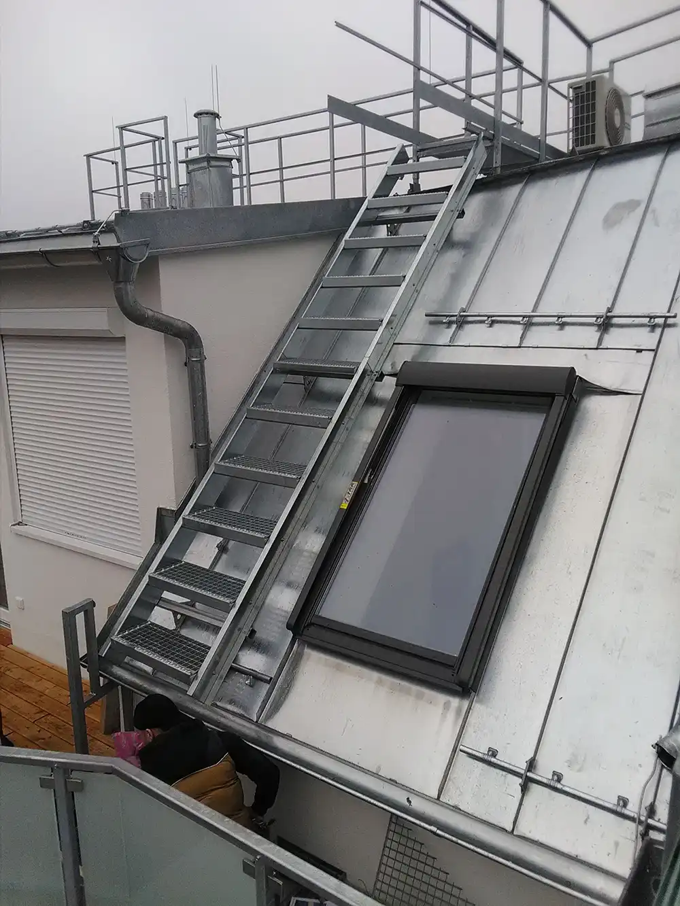

Baukoordination bei Arbeiten am Dach
Bei den Arbeiten im Dachbereich übernahmen wir die Baustellenkoordination. Arbeiten mehrere Gewerke am Dach, stimmen wir ihre Zugänge und die gemeinsamen Maßnahmen gegen Absturz mit den ausführenden Firmen ab.
Mehr über Baukoordination